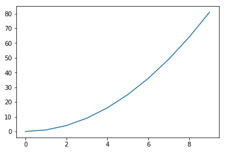
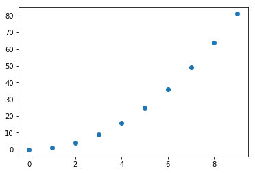

Functions and Modules
寫程式時，我們常常會用到函式(function)，目的是讓我們的程式看起來更有系統。另外我們也可以從模組(module)中引用別人寫好的函式省去自己重寫的麻煩。
這篇我們會介紹函式的定義方式、模組的引入，以及一些物理、數學上常用的模組給大家。
定義函式
函式的應用最單純的就是定義一個數學函數。比如函數f(x)=x3，code:
def f(x):
return x**3
這樣我們就把f定為一個函式了，我們可以試著打印 f(2) ，得到的應該會是 8 。
定義函式方式:
def function(x1, x2, ...):
processes
return value
function:函式的名稱
x1, x2:輸入的變數
processes:中間的處理過程
value:處理後的結果
下面大家可以參考一個比較複雜的函式並使用看看:
模組的引入與模組內涵式使用
要使用別人寫的模組必須先將其 import(引入) 到程式裡，接著才能使用，比如我們想要使用 time module 裡的 time 函式印出時間，
引入與使用有以下幾種方式:
1.把模組取一個新的在自己的程式裡使用的名子引入，再使用函式 (較常使用的方式)
import time as tm
print(tm.time())
命名是為了減少程式碼，也可以不用另取名字，如:
import time
print(time.time())
2.引入整個模組 (僅需使用一種模組內的函式)
from time import*
print(time())
3.只引入要用的函式 (僅需使用模組內的少數函式)
from time import time
print(time())
常用模組介紹
time
time module 中有許多與時間相關的函式，這邊介紹常用的計時。
time()函式不需要放入任何變數，他return的值是從 1970/1/1 00:00:00 到現在經過的秒數時間。
我們可以利用時間差來計算程式碼所花費的時間，如下:
from time import time
start=time()
for i in range(1000000):
a=1+1
end=time()
print("use",end-start,"s")
上面程式碼我們利用start與end兩個值相減計算執行1000000次加法的大約時間，會需要跑這麼多次是因為加法的運算時間太短，
必須增加次數才測得到。大家可以善用time函示來計算各種程式花的時間。
numpy
numpy module 提供很多數學相關的函式以及π、e等特別數字的近似數值。
numpy把pi定義為一個特殊的變數，數值是3.141592653589793(float type)，你可以試試看code:
import numpy as np
print("π=",np.pi)
再來介紹array，array(陣列)可以用來儲存一系列的資料工用和list相近。
用於list的指令與運算(+,*,append)都是對大小上的操作；而用於array的運算則是對元素的操作，參考code:
a=np.array([0,1,2])
b=np.array([3,4,5])
print("a+b=",a+b)
print("a*3=",a*3)
print("a*b=",a*b)
程式碼前兩行分別定義a,b兩array，後面則呈現彼此作運算的結果。程式的執行結果是:
a+b= [3 5 7]
a*3= [0 3 6]
a*b= [ 0 4 10]
由此，各位應該可以看出，array間的運算是讓同一個位置的元素做運算，也因此，不同大小的array是不能做運算的。
此外，由於是元素間的運算，array可以用各種算符來運算，與只能使用 + & * 的list不同。
最後簡單提一下，numpy有許多數學函數可以用，像是三角函數(sin,cos,tan)、反三角函數(arcsin等)、指數函數(exp)、甚至是矩陣運算。
matplotlib.pyplot
這個模組主要提供我們繪圖的功能，各式各樣的2D圖表幾乎都能用它來畫出來，參考範例:
import matplotlib.pyplot as plt
x=[i for i in range(10)]
y=[x[i]**2 for i in range(10)]
plt.plot(x,y)
plt.show()
關於上面的程式碼，我們先import，接著設定x,y兩個list，再來就輪到pyplot模組出場了。
plot 函式可以讓你放入x,y的data做x-y圖，而show函式則會把畫好的圖顯示出來。
另外還有一個常用到的繪圖函式 scatter ，plot繪畫出折線圖，而scatter則是畫出散佈圖，下面是兩種圖的比較:
plotting

scattering
